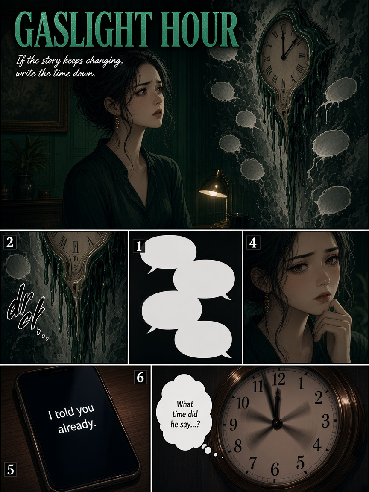
What time did he say…?
Version A: “Traffic. Left at six.”
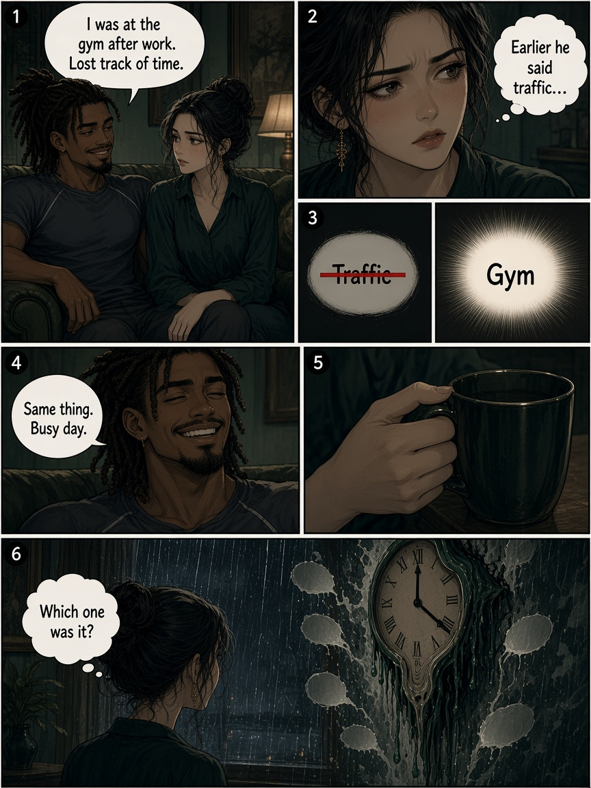
Version B: “I was at the gym.”
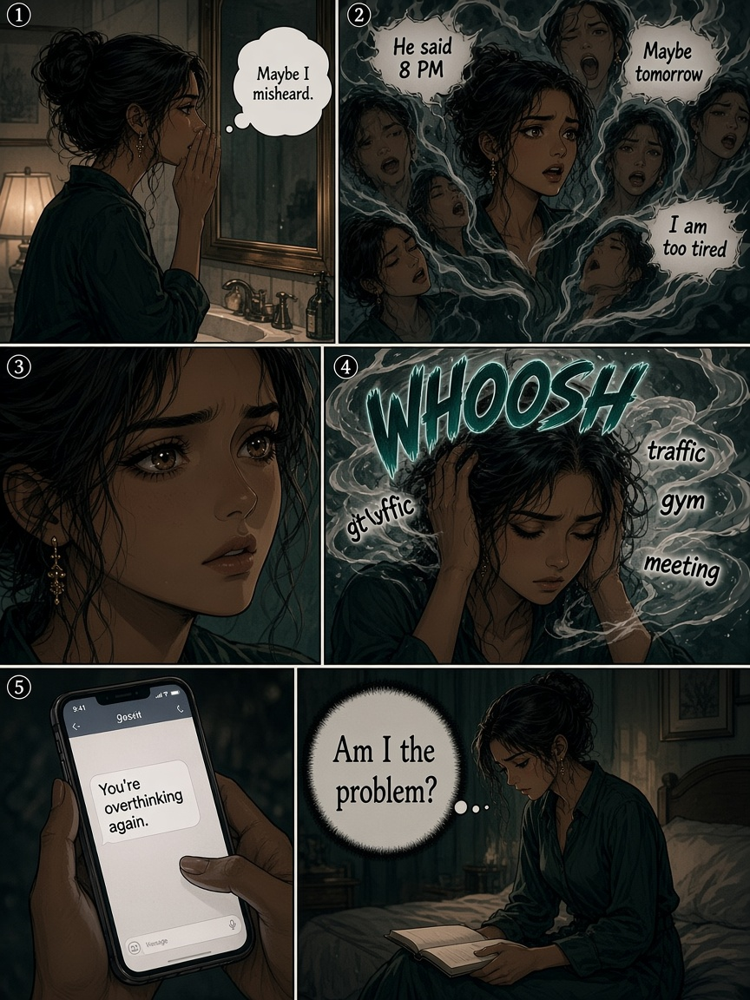
“Maybe I misheard.”
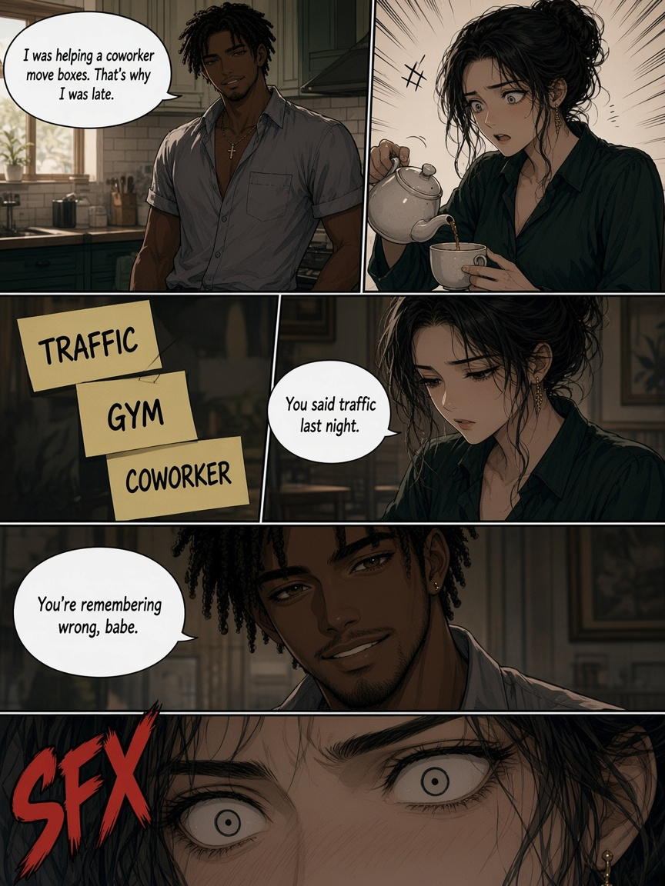
Version C: “You’re remembering wrong.”
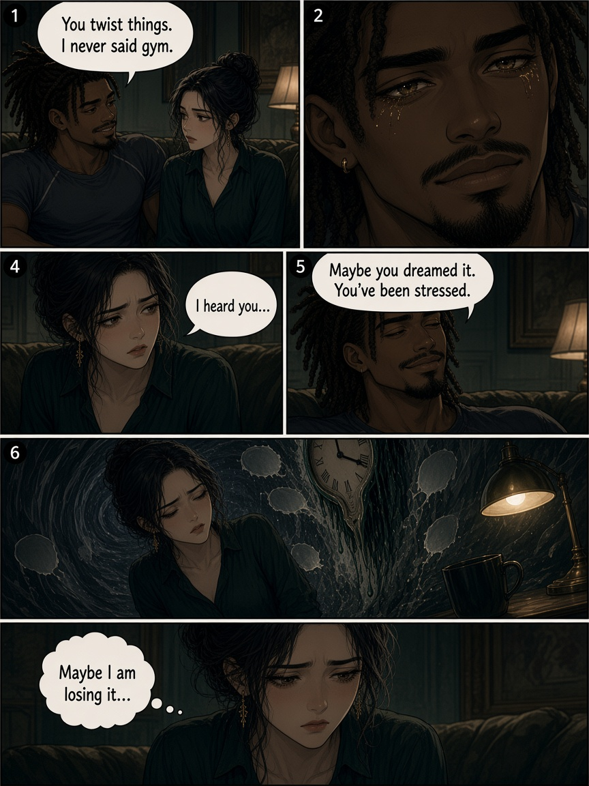
“Maybe you dreamed it.”
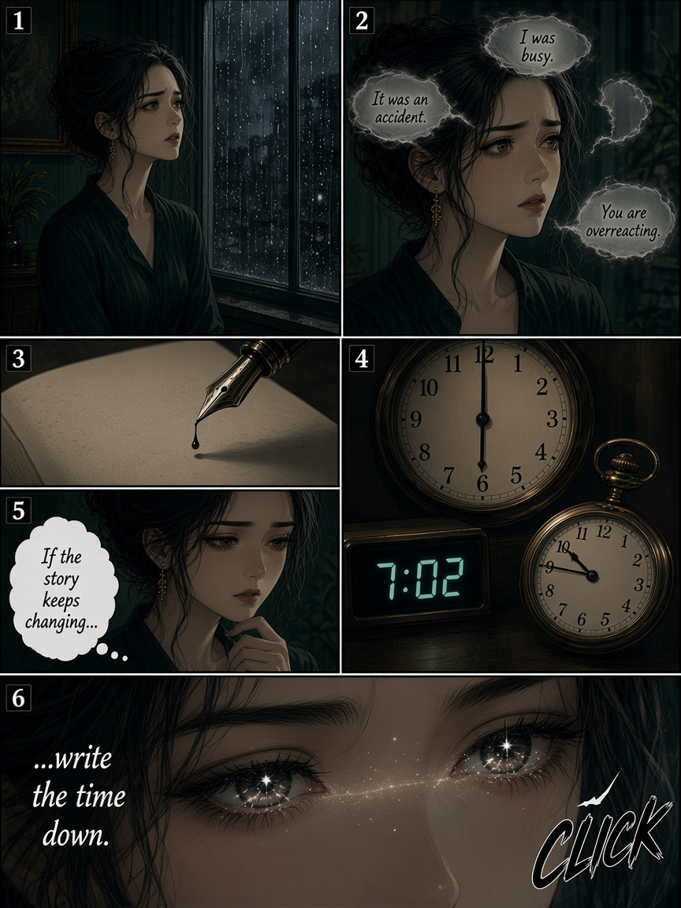
If the story keeps changing… write the time down.
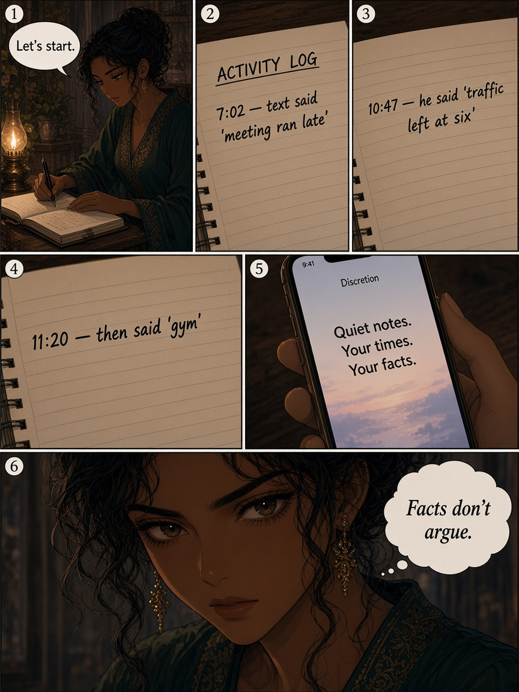
Activity log. Facts don’t argue.
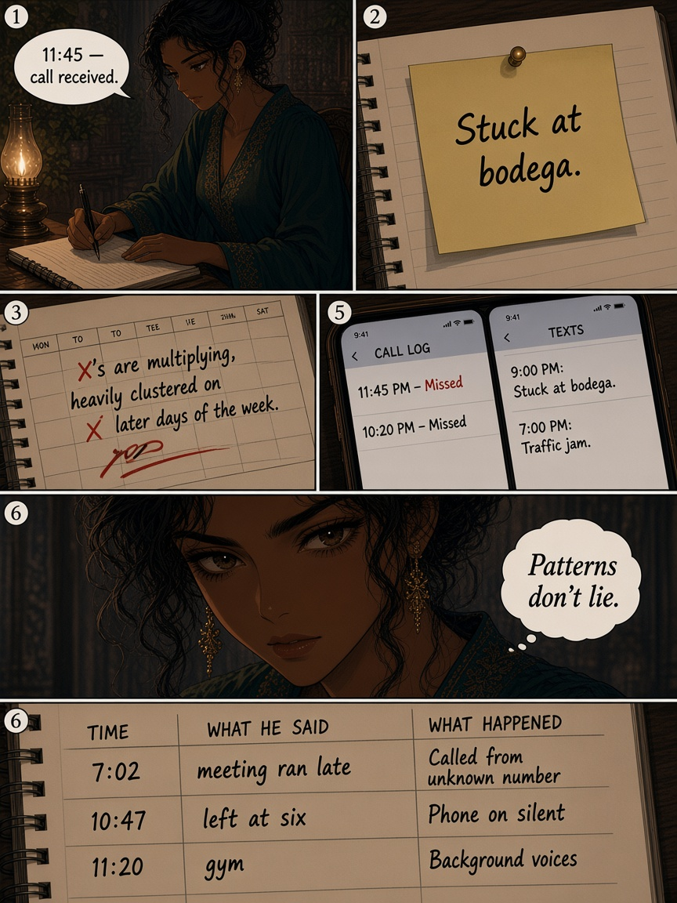
Days stack. The pattern writes itself.
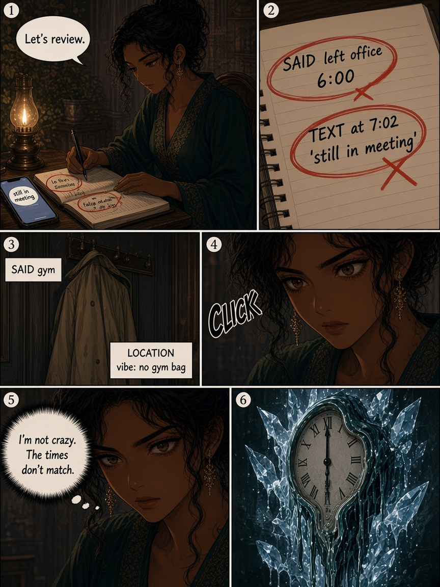
I’m not crazy. The times don’t match.
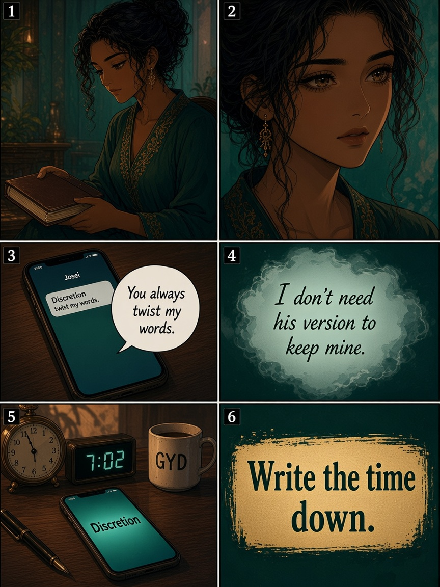
I don’t need his version to keep mine.
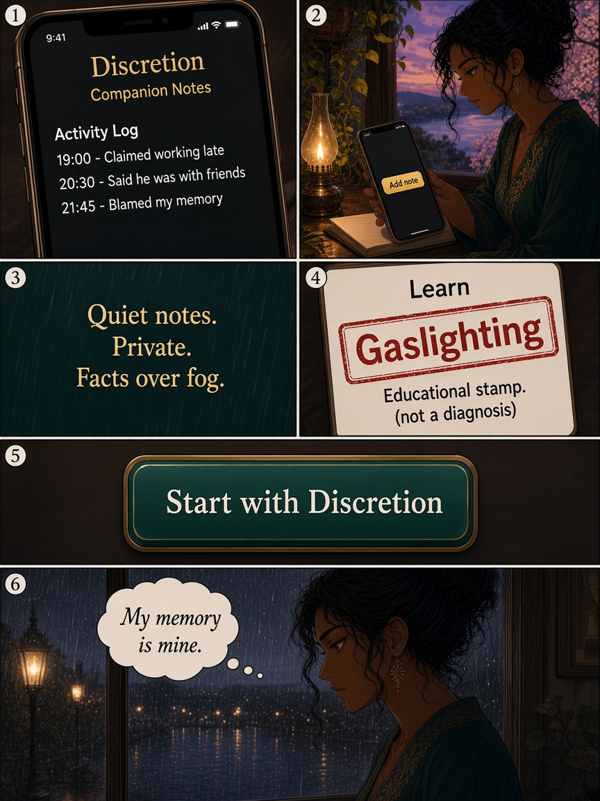
Quiet notes. Private. Facts over fog.
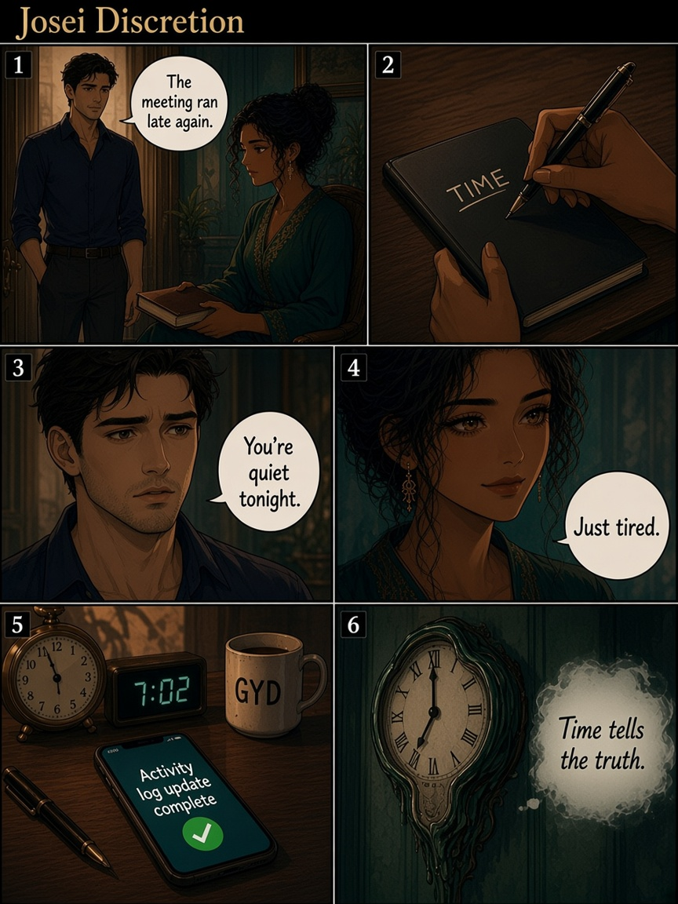
Time tells the truth.
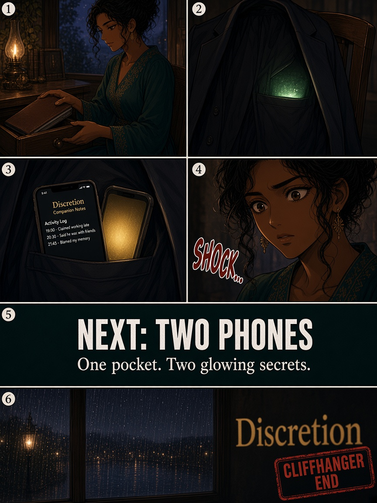
Two glows. Next: Two Phones…